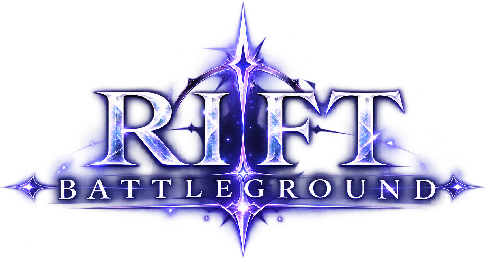

Récupérez l’installateur
Téléchargez le fichier Setup pour Windows sur cette page.

Installez le jeu et son launcher sur votre PC. Connectez-vous à votre compte et retrouvez les combats en ligne.
Setup .exe · Environ 232 Mo
Un seul installateur pour le launcher et le jeu.
Connexion Internet nécessaire pour jouer.
Téléchargez le fichier Setup pour Windows sur cette page.
Ouvrez le Setup et suivez les étapes. Le raccourci du launcher apparaît sur votre bureau.
Ouvrez le launcher, attendez la vérification du serveur, puis cliquez sur PLAY et connectez-vous.